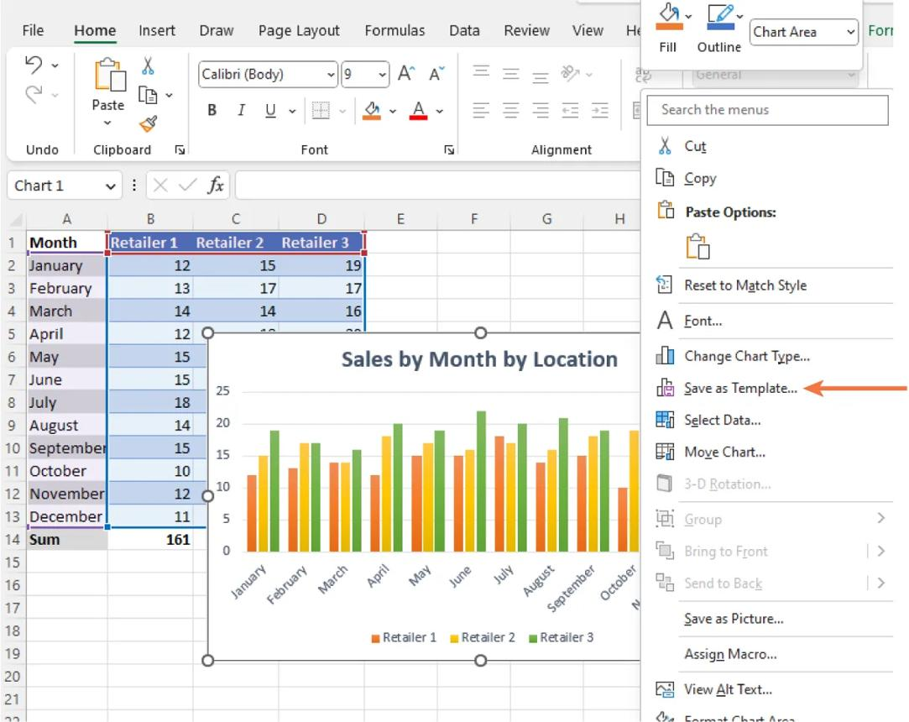
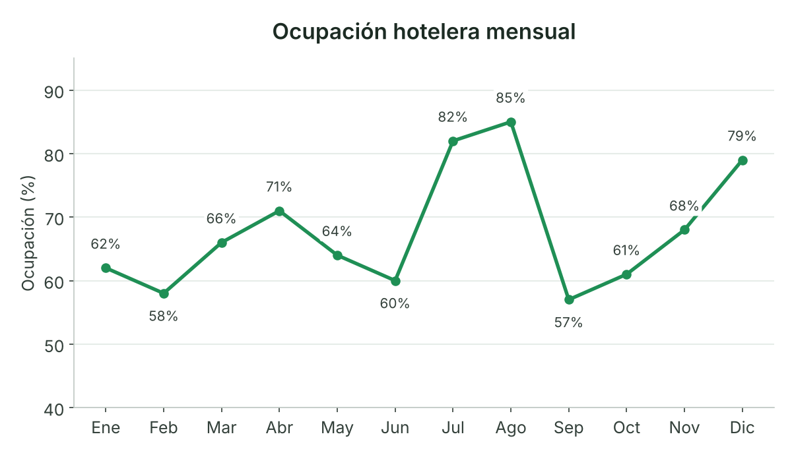
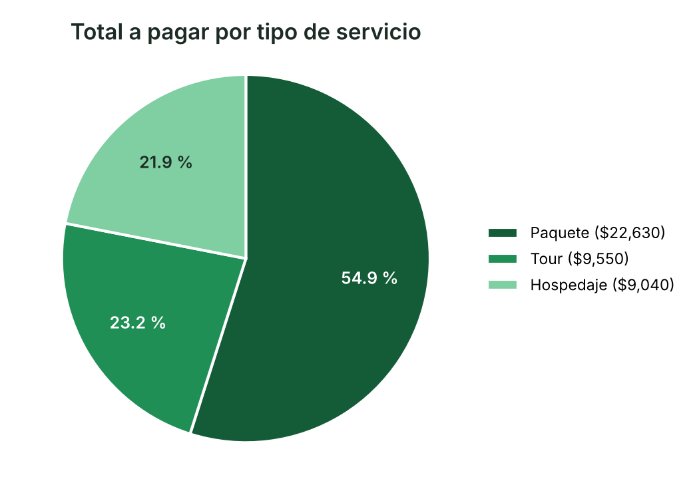
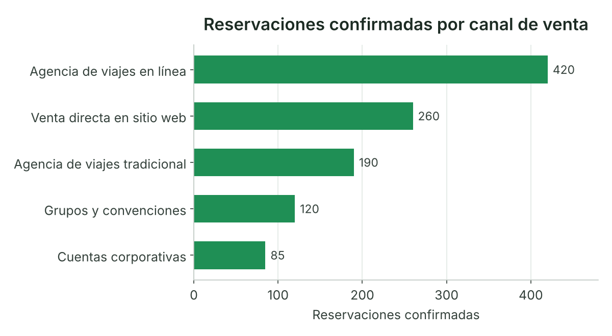

Unidad III · Tema 3.5
Elaboración de gráficos
Un gráfico representa datos de manera visual para facilitar la comparación de categorías, reconocer tendencias y comunicar resultados.
Tipos de gráficos
En Excel para Microsoft 365, los gráficos se crean seleccionando los datos y utilizando la pestaña Insertar. El tipo de gráfico debe responder a la pregunta que se quiere analizar (Microsoft, s. f.-l).
Gráfico de columnas
Compara ingresos entre destinos, productos o periodos.

Nota. Tomado de Workplace Software and Skills (Figura 11.94), por T. Bolling, A. Mitchell, T. Scott y N. Wheeler, 2023, OpenStax (https://openstax.org/books/workplace-software-skills/pages/11-5-data-analysis-charts). CC BY-NC-SA 4.0. Captura de pantalla de Microsoft Excel usada con permiso de Microsoft.
Gráfico de líneas
Muestra cambios a través del tiempo, como la ocupación mensual.

Nota. Elaboración propia con datos ilustrativos.
Gráfico circular
Representa proporciones de un total cuando existen pocas categorías y los valores son comparables.

Nota. Elaboración propia con los datos de la base de reservaciones de la práctica 2 (columna Total a pagar).
Gráfico de barras
Facilita comparar categorías, especialmente cuando sus nombres son largos.

Nota. Elaboración propia con datos ilustrativos.
Procedimiento para crear un gráfico
- Prepara una tabla con encabezados y datos.
- Selecciona el rango.
- Entra a Insertar → Gráficos.
- Selecciona el tipo apropiado.
- Agrega un título descriptivo.
- Revisa los ejes, las etiquetas, las unidades y la leyenda.
- Comprueba que el gráfico corresponde a los datos de origen.
3.5.1Modificación del tamaño del gráfico
Ajustar las dimensiones de un gráfico permite adaptar la presentación manteniendo la legibilidad de títulos, ejes y leyendas (Microsoft, s. f.-p).
Procedimiento
- Selecciona el gráfico.
- Arrastra los controladores de las esquinas para modificar sus dimensiones.
- Para establecer medidas precisas, utiliza las opciones de formato de tamaño que estén disponibles en tu versión de Excel.
- Revisa que el título, las etiquetas y la leyenda sigan siendo legibles.
3.5.2Insertar imágenes en los gráficos
Las imágenes pueden complementar un gráfico para identificar destinos, hoteles, atractivos o categorías de servicios. Sin embargo, deben utilizarse con moderación para no dificultar la interpretación de los datos (Microsoft, s. f.-q).
Existen dos posibilidades:
Imagen cercana al gráfico
Insertar una fotografía o un logotipo junto al gráfico, dentro de la hoja de Excel. Es la opción más sencilla y recomendable para principiantes.
Imagen dentro del área del gráfico
Dependiendo de la versión y del tipo de gráfico, puede colocarse una imagen como fondo o como relleno de determinados elementos. Las opciones disponibles pueden variar.
3.5.3Insertar líneas y figuras geométricas
Las formas (rectángulos, flechas, cuadros de texto) permiten estructurar reportes visuales y destacar indicadores clave. Las líneas y figuras ayudan a organizar visualmente un reporte, separar secciones y señalar aspectos importantes (Microsoft, s. f.-m).
En Excel, puedes acceder a estas opciones mediante Insertar → Formas. Según la versión, también puedes utilizar cuadros de texto y otros elementos gráficos. Elementos frecuentes:
Video: Elaboración de gráficos
Comprueba tu comprensión
Pon a prueba tus conocimientos sobre este tema con la actividad de autoevaluación formativa interactiva.